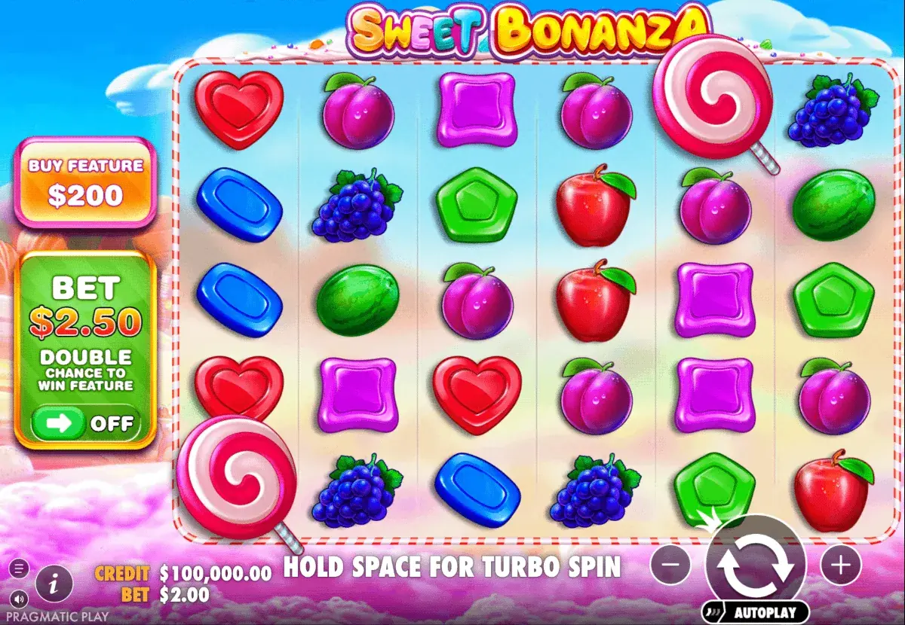
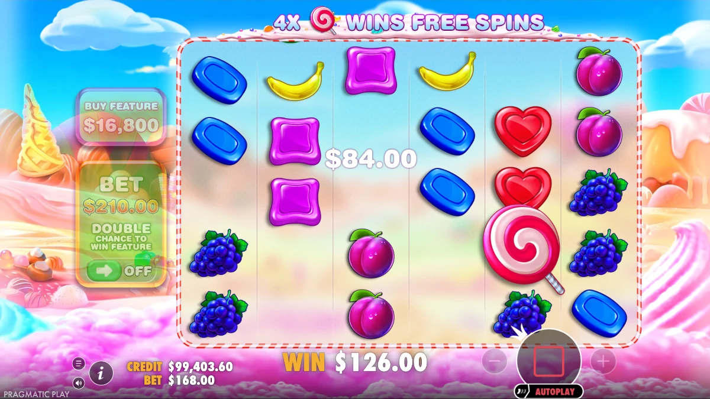
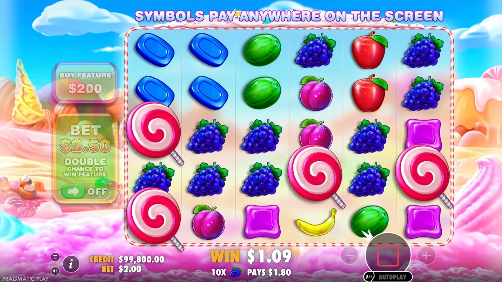

Sweet Bonanza is a Pragmatic Play online slot built on a scatter
pays grid and a tumble feature, not a payline machine and not a
crash game. Matching candy and fruit symbols pay wherever they land,
winning symbols are removed, new ones drop in, and multiplier
symbols stack the free spins round. This guide covers the mechanics,
the published figures to verify, and where the game is legal to
play.
🔞 18+ only
Real-money gambling. Play responsibly, set limits and never bet what
you can't afford to lose. Free, confidential help:
BeGambleAware.org.
We may earn a commission from operator links, at no extra cost to
you.
Pragmatic PlayRTP 96.48%6x5 scatter paysTumble featureMultipliers up to 100x18+
Sweet Bonanza is a Pragmatic Play online slot built on a scatter
pays grid and a tumble feature, not a payline machine and not a
crash game. Matching candy and fruit symbols pay wherever they land,
winning symbols are removed, new ones drop in, and multiplier
symbols stack the free spins round. This guide covers the mechanics,
the published figures to verify, and where the game is legal to
play.

The Sweet Bonanza grid pays matching symbols anywhere, not on paylines.
What Sweet Bonanza is
How Sweet Bonanza pays. Sweet Bonanza is an online slot, not a
table game and not a crash game. It uses a scatter pays model:
symbols do not need to land on a payline, they pay when enough
matching symbols appear anywhere on the grid at the same time.
Winning symbols are then removed and new symbols drop in to fill
the gaps, which is the tumble feature. Tumbles keep repeating for
as long as each drop creates a new win, so a single paid spin can
resolve into a chain of wins. The lollipop scatter symbol is what
triggers the free spins round, and multiplier symbols land during
that round and combine with the tumble chain. Search demand in the
dataset confirms all of these components as things players look up
by name: tumble feature, lollipop scatter, multiplier bombs,
scatter pays and a 6x5 grid.

One paid spin can resolve into a chain of tumble wins.
The figures below come from the
official Pragmatic Play game page. Landing 8 to 12 or more matching symbols anywhere on the grid
awards up to 50x your stake. Four to six lollipop scatters award
up to 100x and trigger the bonus game with 10 free spins.
Multiplier symbols worth up to 100x can land during that feature.
The grid is 6x5. The full symbol paytable and the exact multiplier
values are shown in the game's own information panel, which is the
version your operator has licensed.

The lollipop scatter is the free spins trigger.
Who makes it
Powered by Pragmatic Play. Sweet Bonanza is a Pragmatic Play
title, and the studio maintains the official game sheet that
operators license. Searchers look for this relationship directly:
the export contains sweet bonanza pragmatic play, pragmatic play
sweet bonanza, sweet bonanza game provider and pragmatic play
sweet bonanza official page. Because the same brand covers several
separate products, always match the product name before you quote
a statistic. Sweet Bonanza, Sweet Bonanza 1000, Sweet Bonanza
Xmas, Sweet Bonanza Super Scatter and Sweet Bonanza Dice are
separate slot releases, Sweet Bonanza Candyland is a live game
show, and Slingo Sweet Bonanza is a Slingo-format adaptation of
the brand. Each one publishes its own figures on its own official
game page. Pragmatic Play states that it is certified or licensed
in over 30 jurisdictions and supplies its games to operators in
regulated markets, so which titles you can reach depends on your
operator rather than on the studio.
How to play Sweet Bonanza, step by step
1🎮
Open the demo first
Open the game in demo mode and set the stake to the minimum while you learn the grid.
2🔍
Confirm the RTP
Read the figure in the in-game information panel, because operators can license more than one configuration.
3🍬
Symbols pay anywhere
Forget paylines. Watch the whole 6x5 grid: a win is eight or more of the same symbol landing anywhere on it.
4🍩
Let a tumble chain finish
Winning symbols are removed and new ones drop in. Judge a result only once the chain resolves, since one paid spin can produce several consecutive wins.
5🍭
Catch the lollipop scatters
Four to six of them start the bonus round with 10 free spins. That round is where the multiplier symbols appear.
6🚫
Set a budget and a loss limit
Decide a session budget and a loss limit before you switch from demo credits to real money.
There is no stake pattern, spin timing or bet-sizing rule that
changes the odds of any spin. Stake ranges, and whether ante bet
and bonus buy are offered at all, differ by operator and by
market, so read them in the game before you set a budget.
Demo and free play
Play the demo before you deposit. A demo runs on play credits with
the same maths model as the real game, so it is the safest way to
see how often tumbles chain and how volatile the swings feel. Demo
results cannot be withdrawn and never predict a real-money
session. Bonus buy and ante bet options are restricted or removed
in several markets, so a demo may not expose every feature your
operator offers.
Live Demodemogamesfree.pragmaticplay.net
The demo above is the official Pragmatic Play free-play build,
loaded straight from the provider. It starts loading when you
scroll it into view, so it costs nothing until you reach it.
RTP, volatility and max win
Sweet Bonanza is a high volatility slot: long quiet stretches
broken by occasional large tumble chains. Search demand in the
dataset shows players looking up three separate figures by name,
RTP, volatility and max win, and it also shows conflicting RTP
values circulating in queries. The dedicated
Sweet Bonanza max win, RTP and volatility
page covers each figure in full. Pragmatic Play publishes an RTP
of 96.48% for Sweet Bonanza on its
official game page, which settles the 96.48 / 96.5 / 96.51 spread that circulates
in search. Operators can still license a lower configuration, so
the figure in your own in-game information panel is the one that
applies to you. Pragmatic Play does not print a maximum win
multiplier or a volatility rating for this title on that page, and
third-party sources disagree on the max win, quoting both 21,100x
and 21,175x. We do not pick one. The figure that counts is the one
in the paytable of the build you are playing.
Where to play Sweet Bonanza
Availability is decided by your licensed market, not by the game.
The same title can be live at a regulated operator in one country
and unavailable in the next. Before you register, check the
operator's licence number, the age limit that applies to you, the
deposit and withdrawal methods, and whether the bonus terms attach
wagering to slot play.
Affiliate disclosure: some links on this page are affiliate links.
If you sign up through them we may earn a commission at no extra
cost to you. This never affects our assessments. Commercial
availability and terms are set by the operators.
We list only operators we can confirm carry the game and hold a
valid licence. Verify the licence number on the regulator's own
public register before you deposit, not on the operator's page.
Operator
Welcome bonus
Sweet Bonanza (Y/N)
Payout speed
Min deposit
Licence / region
Last checked
Play
RodeoSlots
100% + 150 Free Spins
Yes · Pragmatic Play
up to 48h
$10
Curaçao / Global
LuckyStar
up to 250%
Yes · Pragmatic Play
2–24h
$10
Curaçao / Global
RollXO
100% + 200 FS
Yes · Pragmatic Play
instant
$10
Curaçao / Global
Is it safe and fair
The game itself is a certified RNG product from a licensed studio.
The real risk sits around it: fake apps, cloned sites and paid
tracker or predictor tools that claim to read upcoming results.
None of those tools can work, because outcomes are generated
independently for every spin. The
is Sweet Bonanza legit and how fairness is certified
page covers verification steps and the specific scam patterns that
appear in Sweet Bonanza search demand.
Sweet Bonanza versions and related titles
The brand covers several distinct products with different maths.
Sweet Bonanza 1000 slot compared
is a separate release with its own published figures.
Sweet Bonanza Candyland live game show
is a live game show rather than a slot.
Slingo Sweet Bonanza format explained
is a Slingo-format adaptation. Sweet Bonanza Xmas, Super Scatter
and Dice are further separate titles. Never carry a statistic from
one product to another. Each product page on this site states its
own figures.
Sweet Bonanza FAQ
How does Sweet Bonanza work?
Sweet Bonanza is a scatter pays slot. Matching symbols pay when
enough of them land anywhere on the grid, rather than along a
payline. Winning symbols are removed, new symbols tumble in to
fill the gaps, and the chain repeats while each drop creates
another win.
How do you play Sweet Bonanza for the first time?
Open the demo, set the smallest stake, and check the RTP shown
in the in-game information panel. Let each tumble chain finish
before judging the spin. Set a session budget and a loss limit
before switching to real money, and treat the budget as the
maximum you can lose.
What triggers the free spins round?
Four to six lollipop scatters trigger the bonus game and award
10 free spins, according to the official Pragmatic Play game
page. Multiplier symbols worth up to 100x can land during that
round and combine with tumble chains.
Is Sweet Bonanza a crash game?
No. Sweet Bonanza is an online slot from Pragmatic Play that
uses scatter pays and a tumble feature. There is no rising
multiplier to cash out, and no timing decision during a spin.
Any site describing it as a crash game is describing a different
product.
Can you play Sweet Bonanza for free?
Yes, through a demo that runs on play credits with the same
maths model. Demo balances have no cash value and cannot be
withdrawn. Some features, including bonus buy and ante bet, are
restricted in certain markets and may not appear in either the
demo or the real game.
What is the difference between Sweet Bonanza and Sweet Bonanza
1000?
They are separate releases with separate published figures, not
two names for one game. Sweet Bonanza 1000 has its own RTP,
volatility and maximum win multiplier. Compare the two on the
dedicated Sweet Bonanza 1000 page rather than assuming the
numbers carry across.
Does any strategy improve your chances in Sweet Bonanza?
No. Every spin is generated independently by a certified random
number generator, so stake patterns, spin timing and session
length cannot change the odds. The only decisions that matter
are your budget, your loss limit and the licensed operator you
choose.
18+ only. Gambling involves financial risk and is not a way to
make money. Play responsibly and never bet more than you can
afford to lose. If gambling stops being fun, seek help: GamCare
(gamcare.org.uk), BeGambleAware (begambleaware.org), or the
1-800-GAMBLER helpline.
By
Ryan Murton, Growth & Product covering crash and casino games for 7
years. Last updated:
. See our editorial
approach on the About page.